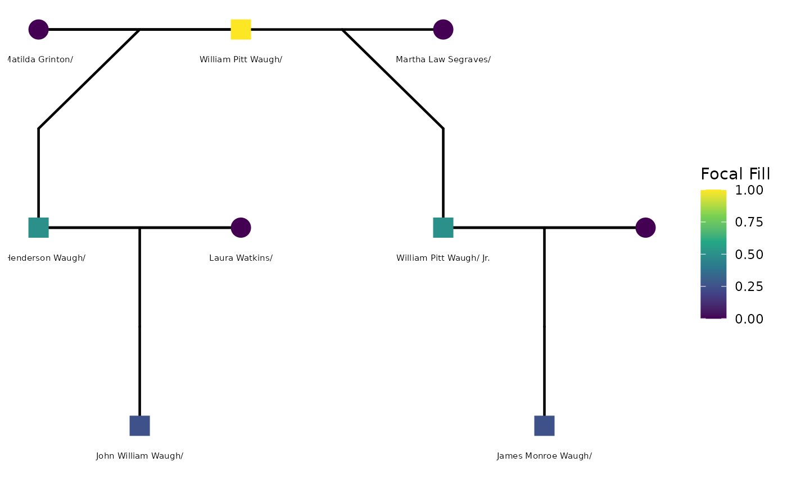

What is a GEDCOM file?
GEDCOM (Genealogical Data Communication) is a plain-text file format used by virtually every genealogy platform — Ancestry, FamilySearch, MyHeritage, Gramps, and others. A typical workflow looks like this:
- Build or find a family tree on Ancestry.com (or similar).
- Export it as a
.gedfile from the tree settings page. - Load it into R with
readGedcom().
The file itself is a structured text file. Here is a small slice:
```{gedcom-sample, eval = FALSE} 0 @I1@ INDI 1 NAME William Pitt /Waugh/ 1 SEX M 1 BIRT 2 DATE 28 APR 1775 2 PLAC Adams County, Pennsylvania, USA 1 DEAT 2 DATE 14 AUG 1852 2 PLAC Wilkes County, North Carolina, USA 1 FAMS @F28@ 1 FAMS @F29@
0 @F28@ FAM 1 HUSB @I1@ 1 WIFE @I2@ 1 CHIL @I3@
0 @F29@ FAM 1 HUSB @I1@ 1 WIFE @I4@ 1 CHIL @I5@
Individual records (`INDI`) hold person-level facts; family records (`FAM`) link spouses and children and carry marriage or divorce events.
## Why use R for genealogy?
The tidygedcom package provides tools for parsing and tidying GEDCOM files, making it easier to work with genealogical data in R. R's powerful data manipulation capabilities allow researchers to clean, analyze, and visualize genealogical data in ways that may not be possible with traditional genealogy software. Additionally, R's extensive ecosystem of packages for statistical analysis and machine learning can be applied to genealogical data to uncover patterns and insights that may not be immediately apparent.
This vignette uses a real family tree as its running example: the W. Henderson Waugh Family Tree. We'll discuss more about our running example in another vignette. (But briefly, the Waugh family tree is a genetic genealogy collaboration between two Wake Forest psychology faculty -- SMG and CEW. See https://www.arcadiapublishing.com/products/slavery-in-wilkes-county-north-carolina-9781467135832 for more on the historical context of the Waugh family tree.) The tidygedcom package provides the tools for parsing and tidying GEDCOM files, and the Waugh family tree provides a real-world test case for these tools.
## A minimal example
We construct a small GEDCOM in memory that captures the key relationships described above. This allows all code examples below to run without an external file.
``` r
sample_ged <- c(
"0 HEAD",
"1 GEDC",
"2 VERS 5.5.1",
"1 CHAR UTF-8",
# William Pitt Waugh Sr. — the common paternal ancestor
"0 @I1@ INDI",
"1 NAME William Pitt /Waugh/",
"1 SEX M",
"1 BIRT",
"2 DATE 28 APR 1775",
"2 PLAC Adams County, Pennsylvania, USA",
"1 DEAT",
"2 DATE 14 AUG 1852",
"2 PLAC Wilkes County, North Carolina, USA",
"1 FAMS @F1@",
"1 FAMS @F2@",
# Matilda Grinton — mother of W. Henderson Waugh
"0 @I2@ INDI",
"1 NAME Matilda /Grinton/",
"1 SEX F",
"1 BIRT",
"2 DATE ABT 1797",
"2 PLAC North Carolina, USA",
"1 FAMS @F1@",
# W. Henderson Waugh — 2nd great-grandfather of focal person
"0 @I3@ INDI",
"1 NAME W. Henderson /Waugh/",
"1 SEX M",
"1 BIRT",
"2 DATE ABT 1835",
"2 PLAC Wilkes County, North Carolina, USA",
"1 FAMC @F1@",
"1 FAMS @F3@",
# Martha Law Segraves — mother of William Pitt Waugh Jr.
"0 @I4@ INDI",
"1 NAME Martha Law /Segraves/",
"1 SEX F",
"1 BIRT",
"2 DATE OCT 1814",
"1 FAMS @F2@",
# William Pitt Waugh Jr. (born William Segraves) — paternal half-brother of W. Henderson
"0 @I5@ INDI",
"1 NAME William Pitt /Waugh/ Jr.",
"1 SEX M",
"1 BIRT",
"2 DATE 1844",
"2 PLAC Wilkes County, North Carolina, USA",
"1 DEAT",
"2 DATE FEB 1880",
"1 FAMC @F2@",
"1 FAMS @F4@",
# Laura Watkins — wife of W. Henderson Waugh
"0 @I6@ INDI",
"1 NAME Laura /Watkins/",
"1 SEX F",
"1 BIRT",
"2 DATE ABT 1846",
"2 PLAC North Carolina, USA",
"1 FAMS @F3@",
# John William (Bud) Waugh — son of W. Henderson; great-grandfather of focal person
"0 @I7@ INDI",
"1 NAME John William /Waugh/",
"1 SEX M",
"1 BIRT",
"2 DATE ABT JUN 1880",
"2 PLAC North Carolina, USA",
"1 FAMC @F3@",
# James Monroe Waugh — son of William Pitt Jr.; Y-DNA candidate branch
"0 @I8@ INDI",
"1 NAME James Monroe /Waugh/",
"1 SEX M",
"1 BIRT",
"2 DATE 10 NOV 1867",
"1 DEAT",
"2 DATE 23 JUL 1937",
"1 FAMC @F4@",
# Family 1: William Pitt Sr. + Matilda Grinton -> W. Henderson Waugh
"0 @F1@ FAM",
"1 HUSB @I1@",
"1 WIFE @I2@",
"1 CHIL @I3@",
# Family 2: William Pitt Sr. + Martha Segraves -> William Pitt Jr.
# _SREL friend marks this as a non-marital relationship in Ancestry exports
"0 @F2@ FAM",
"1 HUSB @I1@",
"1 WIFE @I4@",
"1 CHIL @I5@",
"1 _SREL friend",
# Family 3: W. Henderson Waugh + Laura Watkins
"0 @F3@ FAM",
"1 HUSB @I3@",
"1 WIFE @I6@",
"1 CHIL @I7@",
"1 MARR",
"2 DATE 24 JUN 1877",
"2 PLAC Wilkes County, North Carolina, USA",
# Family 4: William Pitt Jr. + wife
"0 @F4@ FAM",
"1 HUSB @I5@",
"1 CHIL @I8@",
"0 TRLR"
)
tmp_ged <- tempfile(fileext = ".ged")
writeLines(sample_ged, tmp_ged)Reading individual records: readGedcom()
readGedcom() parses all INDI blocks and
returns one row per person. It infers momID and
dadID automatically by tracing FAMC →
FAMS links — no manual ID mapping required.
ped <- readGedcom(tmp_ged, verbose = FALSE)
ped[, c("personID", "name", "sex", "birth_date", "death_date", "momID", "dadID")]
#> personID name sex birth_date death_date momID dadID
#> 1 1 William Pitt Waugh M 28 APR 1775 14 AUG 1852 <NA> <NA>
#> 2 2 Matilda Grinton F ABT 1797 <NA> <NA> <NA>
#> 3 3 W. Henderson Waugh M ABT 1835 <NA> 2 1
#> 4 4 Martha Law Segraves F OCT 1814 <NA> <NA> <NA>
#> 5 5 William Pitt Waugh/ Jr. M 1844 FEB 1880 4 1
#> 6 6 Laura Watkins F ABT 1846 <NA> <NA> <NA>
#> 7 7 John William Waugh M ABT JUN 1880 <NA> 6 3
#> 8 8 James Monroe Waugh M 10 NOV 1867 23 JUL 1937 <NA> 5Notice that W. Henderson Waugh and William Pitt Waugh Jr. share the
same dadID — William Pitt Waugh Sr. — reflecting the
half-sibling relationship in the parsed data.
GEDCOM version
attr(ped, "gedcom_version")
#> [1] "5.5.1"Quick overview: summarizeGedcom()
summarizeGedcom(ped)
#> GEDCOM Summary (version: 5.5.1 )
#> Individuals: 8
#> Sex: M = 5 | F = 3 | Unknown = 0
#> With birth date: 8 (100%)
#> With death date: 3 (38%)
#> With birth place: 6 (75%)
#> With death place: 1 (12%)
#> With known mother: 3 (38%)
#> With known father: 4 (50%)For a large real-world file (the full W. Henderson Waugh tree has several hundred individuals), this is the first thing to call after loading — it shows at a glance how much birth, death, and parentage data is present before any cleaning.
Working with dates
GEDCOM dates are raw strings that often carry qualifiers
(ABT, BEF, AFT) or calendar
escape codes (@#DGREGORIAN@). Historical genealogy —
especially for antebellum American records — is full of approximate
dates: birth years reconstructed from census age questions, death years
inferred from probate filings, and marriage dates from county clerk
records that were never systematically kept.
Parse to Date objects
Pass parse_dates = TRUE to convert
birth_date and death_date to proper
Date objects. Qualifiers and escapes are stripped
first:
ped_dates <- readGedcom(tmp_ged, parse_dates = TRUE, verbose = FALSE)
ped_dates[, c("name", "birth_date", "death_date")]
#> name birth_date death_date
#> 1 William Pitt Waugh 1775-04-28 1852-08-14
#> 2 Matilda Grinton <NA> <NA>
#> 3 W. Henderson Waugh <NA> <NA>
#> 4 Martha Law Segraves <NA> <NA>
#> 5 William Pitt Waugh/ Jr. <NA> <NA>
#> 6 Laura Watkins <NA> <NA>
#> 7 John William Waugh <NA> <NA>
#> 8 James Monroe Waugh 1867-11-10 1937-07-23Extract a year from any GEDCOM date string
Not all dates parse cleanly to Date objects —
"ABT 1835" or "OCT 1814" have no day
component. extractGedcomYear() handles all forms and
returns an integer year:
dates_raw <- c(
"28 APR 1775", "14 AUG 1852", "ABT 1835", "OCT 1814",
"1844", "ABT JUN 1880", NA
)
extractGedcomYear(dates_raw)
#> [1] 1775 1852 1835 1814 1844 1880 NAA typical use: add a birth_year column robust to
approximate dates, then flag individuals who may still be living:
ped$birth_year <- extractGedcomYear(ped$birth_date)
ped$death_year <- extractGedcomYear(ped$death_date)
ped[, c("name", "birth_year", "death_year")]
#> name birth_year death_year
#> 1 William Pitt Waugh 1775 1852
#> 2 Matilda Grinton 1797 NA
#> 3 W. Henderson Waugh 1835 NA
#> 4 Martha Law Segraves 1814 NA
#> 5 William Pitt Waugh/ Jr. 1844 1880
#> 6 Laura Watkins 1846 NA
#> 7 John William Waugh 1880 NA
#> 8 James Monroe Waugh 1867 1937Reading family records: readGedcomFamilies()
Marriage and relationship data live in FAM blocks.
readGedcomFamilies() parses them into a separate data
frame:
fam <- readGedcomFamilies(tmp_ged, verbose = FALSE)
fam[, c("famID", "husbID", "wifeID", "marr_date", "marr_place")]
#> famID husbID wifeID marr_date marr_place
#> 1 1 1 2 <NA> <NA>
#> 2 2 1 4 <NA> <NA>
#> 3 3 3 6 24 JUN 1877 Wilkes County, North Carolina, USA
#> 4 4 5 <NA> <NA> <NA>The _SREL friend tag on Family 2 — the non-marital
relationship between William Pitt Waugh Sr. and Martha Law Segraves — is
preserved in the raw GEDCOM but not yet parsed as a structured column.
This is a known limitation when working with Ancestry.com exports that
use non-standard tags.
Join back to the individuals table to annotate both families with spouse names:
merge(
fam[, c("famID", "husbID", "wifeID", "marr_date", "marr_place")],
ped[, c("personID", "name")],
by.x = "husbID", by.y = "personID", all.x = TRUE
) |>
merge(
ped[, c("personID", "name")],
by.x = "wifeID", by.y = "personID", all.x = TRUE,
suffixes = c("_husb", "_wife")
)
#> wifeID husbID famID marr_date marr_place
#> 1 2 1 1 <NA> <NA>
#> 2 4 1 2 <NA> <NA>
#> 3 6 3 3 24 JUN 1877 Wilkes County, North Carolina, USA
#> 4 <NA> 5 4 <NA> <NA>
#> name_husb name_wife
#> 1 William Pitt Waugh Matilda Grinton
#> 2 William Pitt Waugh Martha Law Segraves
#> 3 W. Henderson Waugh Laura Watkins
#> 4 William Pitt Waugh/ Jr. <NA>Working with coordinates
GEDCOM stores coordinates in compass-prefix notation
(N36.1234, W81.5678).
convertGedcomCoords() converts all
_lat/_long columns to signed decimal degrees
in one call:
coord_ged <- c(
"0 HEAD", "1 GEDC", "2 VERS 5.5.1", "1 CHAR UTF-8",
"0 @I1@ INDI",
"1 NAME William Pitt /Waugh/",
"1 SEX M",
"1 BURI",
"2 PLAC Smithey Cemetery, Wilkes County, NC",
"2 MAP",
"3 LATI N36.1548",
"3 LONG W81.1845",
"0 TRLR"
)
tmp_coord <- tempfile(fileext = ".ged")
writeLines(coord_ged, tmp_coord)
ped_raw <- readGedcom(tmp_coord, remove_empty_cols = FALSE, verbose = FALSE)
ped_conv <- convertGedcomCoords(ped_raw)
ped_raw[, c("name", "burial_lat", "burial_long")]
#> name burial_lat burial_long
#> 1 William Pitt Waugh N36.1548 W81.1845
ped_conv[, c("name", "burial_lat", "burial_long")]
#> name burial_lat burial_long
#> 1 William Pitt Waugh 36.1548 -81.1845
unlink(tmp_coord)You can also call the underlying converters directly:
gedcomLat2Numeric(c("N36.1548", "S33.8688", NA))
#> [1] 36.1548 -33.8688 NA
gedcomLon2Numeric(c("W81.1845", "E151.2093", NA))
#> [1] -81.1845 151.2093 NAFrom GEDCOM to pedigree analysis
Once the data is in a tidy data frame, the BGmisc
package provides the next layer of analysis: computing pairwise
relatedness, tracing paternal lineages, and identifying Y-chromosome
carriers.
library(BGmisc)
#>
#> Attaching package: 'BGmisc'
#> The following objects are masked from 'package:tidygedcom':
#>
#> buildTreeGrid, getWikiTreeSummary, readGed, readgedcom, readGedcom,
#> readWikifamilytree, royal92, traceTreePaths
ped <- readGedcom(tmp_ged, verbose = FALSE)
# Check the pedigree is acyclic and well-formed
checks <- checkPedigreeNetwork(ped,
personID = "personID", momID = "momID", dadID = "dadID",
verbose = FALSE
)
checks$is_acyclic
#> [1] TRUEPlease see the vignette “From GEDCOM to pedigree analysis” for a longer walkthrough of these steps using the W. Henderson Waugh family tree as a case study.
From GEDCOM to pedigree diagrams
You can also visualize the family tree with the
ggpedigree package. The config argument allows
you to customize the plot with a wide range of options.
library(BGmisc)
library(ggpedigree)
ped <- readGedcom(tmp_ged, verbose = FALSE)
ggpedigree(
ped,
personID = "personID",
momID = "momID",
dadID = "dadID",
sexVar = "sex",
config = list(
label_include = TRUE,
code_male = "M",
code_female = "F",
label_column = "name",
label_text_size = 2,
focal_fill_include = TRUE,
sex_color_include = F,
focal_fill_personID = 1,
focal_fill_method = "viridis_c",
segment_lineage_include = TRUE,
segment_lineage_focal_personID = 1,
segment_lineage_component = "paternal",
segment_lineage_legend_title = "Patriline",
add_phantoms = TRUE
)
)
#> REPAIR IN EARLY ALPHA
## Cleaning upPlease see the vignettes from the ggpedigree package for
more on customizing pedigree diagrams with
ggpedigree().
unlink(tmp_ged)Summary of functions
||| | readGedcom(file) | Parse INDI blocks
→ one row per person | | readGedcomFamilies(file) | Parse
FAM blocks → one row per family | |
summarizeGedcom(df) | Coverage counts and percentages | |
extractGedcomYear(x) | Year from any GEDCOM date string | |
convertGedcomCoords(df) | Convert
_lat/_long columns to decimal degrees | |
gedcomLat2Numeric(x) | Convert a latitude string vector | |
gedcomLon2Numeric(x) | Convert a longitude string vector
|